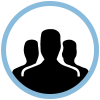
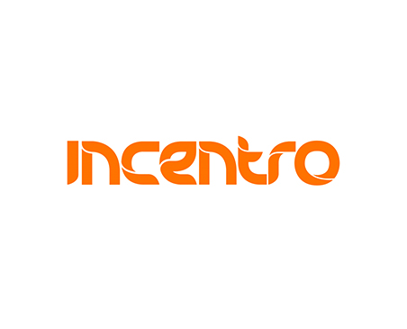
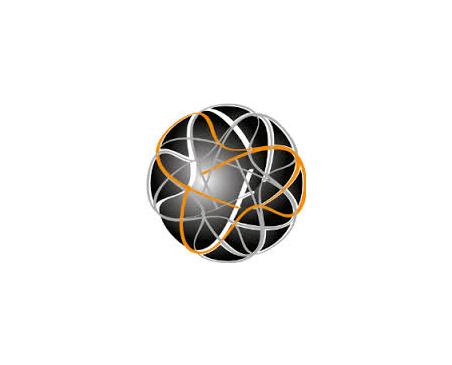

Organisatie

Incentro
Zijn er specifieke onderwerpen die je graag wilt bespreken? Een onderwerp voor de ronde-tafel sessies? Of praktische vragen? Laat het ons weten! Het gaat immers om jou.
Hippo
Zijn er specifieke onderwerpen die je graag wilt bespreken? Een onderwerp voor de ronde-tafel sessies? Of praktische vragen? Laat het ons weten! Het gaat immers om jou.

Crossphase
Zijn er specifieke onderwerpen die je graag wilt bespreken? Een onderwerp voor de ronde-tafel sessies? Of praktische vragen? Laat het ons weten! Het gaat immers om jou.